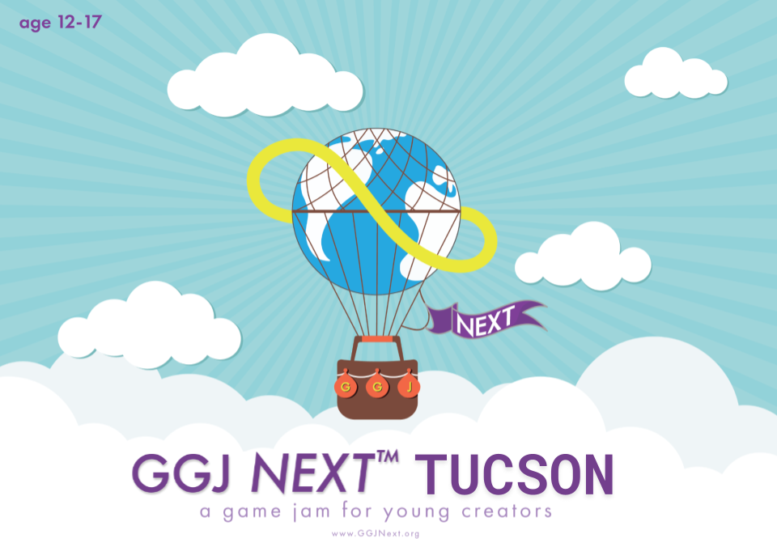

GGJ Next 2025 Tucson
A game jam for ages 12-17

CoderDojo Tucson hosted a hybrid GGJ Next event from 20-26 January 2025!
GGJ Next is a game jam for young people ages 12-17. It's a chance to learn about game design and development, meet new people, and have fun.
Schedule
- Day 1 (Monday, 20 Jan 4-6pm) - Virtual: What's a game jam?
- Day 2 (Tuesday, 21 Jan 4-6pm) - Virtual: Parts of a game
- Day 3 (Wednesday, 22 Jan 4-6pm) - Virtual: Prototype and Playtest
- Day 4 (Thursday, 23 Jan 4-6pm) - Virtual: Game as systems
- Day 5 (Friday, 24 Jan 4-6pm) - Virtual: Thinking creatively about game ideas
- Day 6 (Saturday, 25 Jan 1-4pm) - Virtual: Develop your game
- Day 7 (Sunday, 26 Jan 2-4pm) - Hybrid: Demo your game!
CoderDojo Tucson is a dojo of the CoderDojo Foundation, which is part of the Raspberry Pi Foundation.